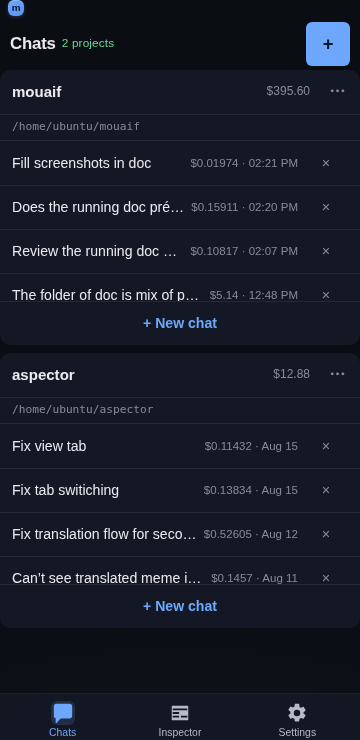

Project card
Overview
The Project card is the main organizational view in mouaif: each registered project appears as a card displaying the project name, path, list of chats, a "+ New chat" button, and a project options menu.

Card features
Project header — displays the project name and path, with an options menu (
⋯) offering:Settings… — opens the dedicated project settings page.
Rename… — updates the display name of the project.
Unregister — removes the project from mouaif without deleting any files on disk.
Scrollable chat list — lists previous conversations sorted by most recently active. Each chat row displays:
The conversation title.
Total token cost and timestamp.
A quick delete (
×) action.Draft-only chats — a chat with no persisted messages but a non-empty composer draft renders the start of that draft instead of the title, tinted yellow (
--warning) with a small yellow rectangle indicator — the inverse of the blue "running" dot. An image-only draft (a pending picture in the composer, no text yet) reads asImage draftso the row still shows that something is waiting there.+ New chat button — creates a fresh conversation and navigates directly into it.
Search — the magnifier at the end of the action row opens a field that searches this project's chats by title, message text, and composer draft. See Project card search.
Custom prompt buttons — prompts with Add to project card enabled appear as icon buttons beside + New chat. Tapping one creates a chat with that prompt attached; its icon also identifies the prompt on the resulting chat row.
Behavior
Independent scrolling — each card's chat list scrolls internally to prevent tall chat lists from pushing the rest of your dashboard out of view. Vertical overscroll is contained so reaching the first or last chat does not move the dashboard behind the list.
Compact height — the project name and path share one compact header row, while its options menu retains a touch-safe target. The per-card chat list is capped at
10.0625rem(161px), keeping about three rows visible before the list scrolls. The cap is applied withmax-height; amin-heightdoes not constrain a populated list and was the reason the previous size fix had no effect on normal phone viewports.Recency sorting — recently opened conversations stay pinned to the top of the card.
Cost tracking — running costs are aggregated per chat and shown directly in the list.
Draft inference — whether a chat is "draft-only" is decided entirely on the client from fields already in the list payload:
messageCount,draftSnippetandhasDraftImage. No additional request is made per row.
Related
Folder picker — registering new project directories.
Project card search — the magnifier on a card: search that project's chats, drafts, and messages.
App and project settings — configuring project-specific prompts and tools.
Chat UI — the chat conversation view.